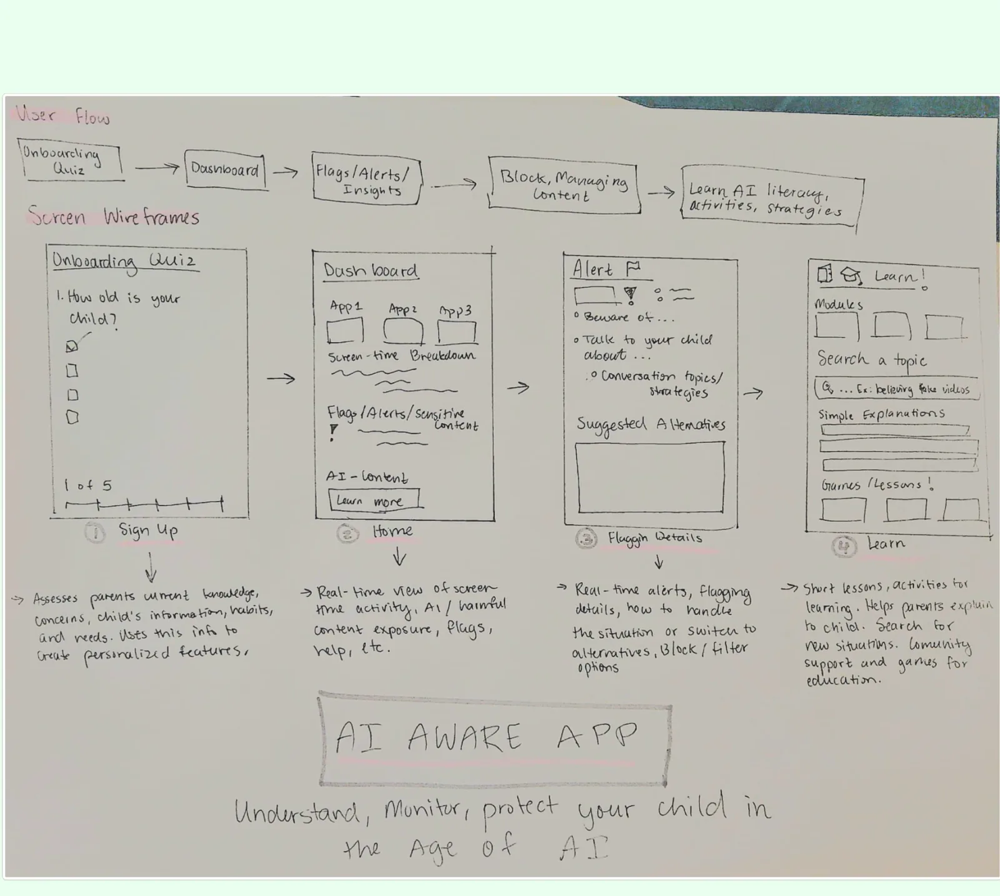
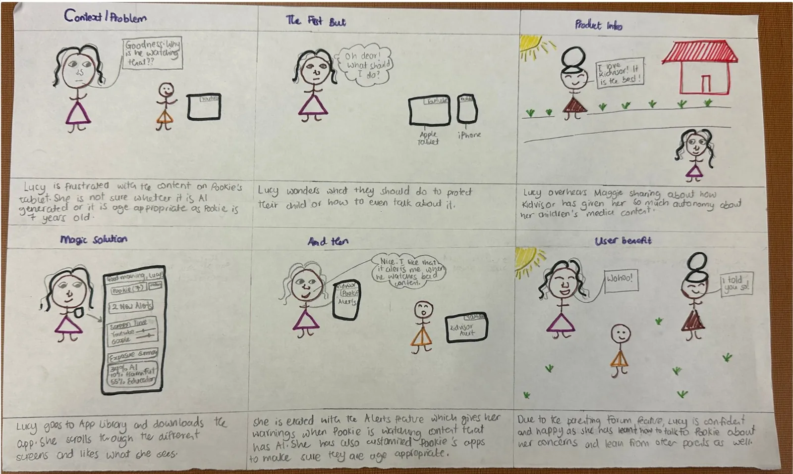
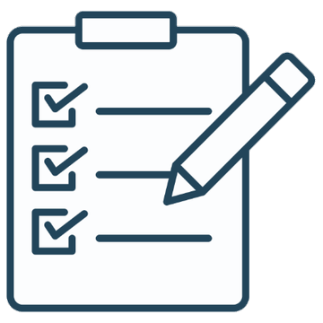
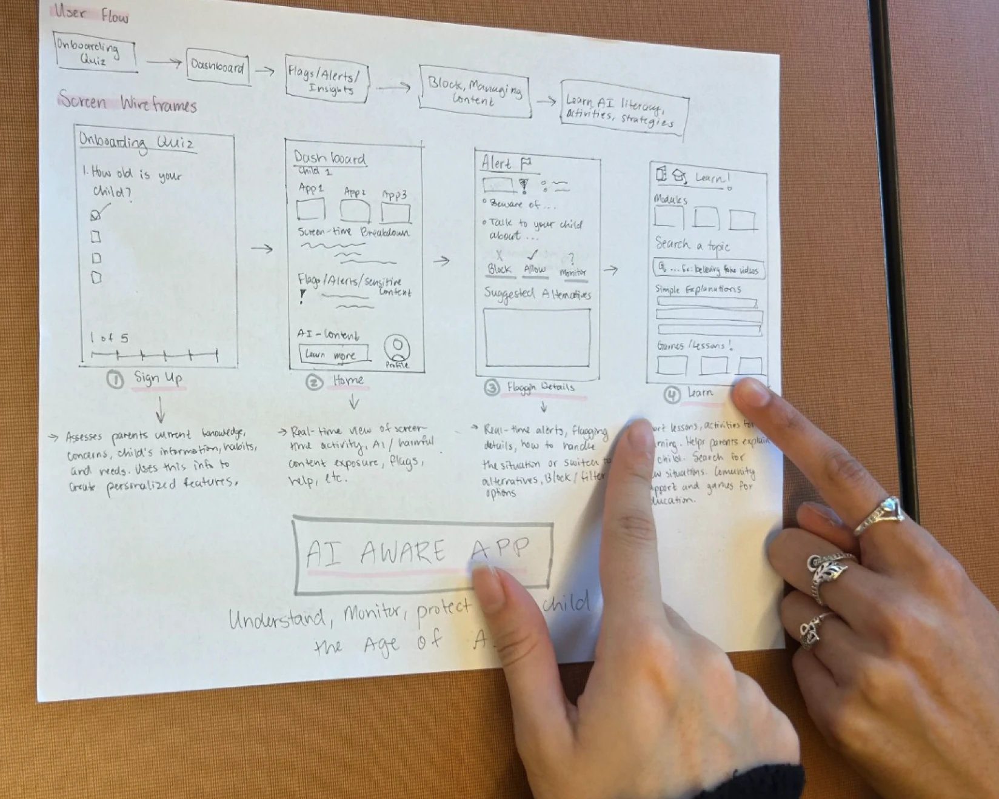
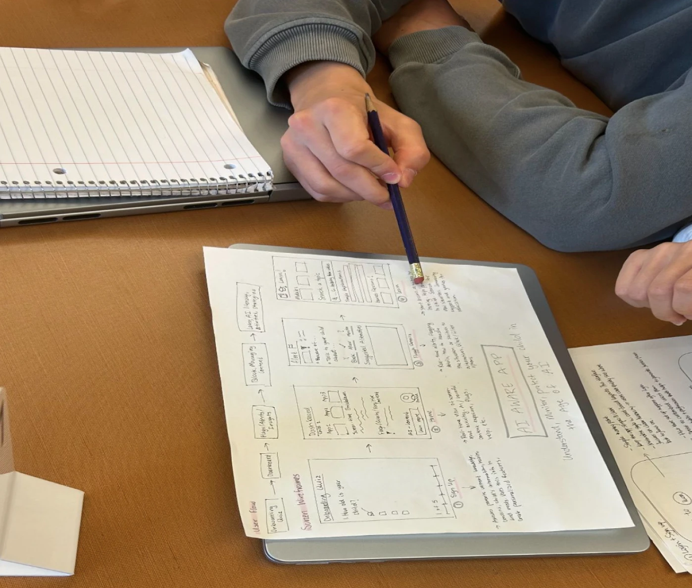

Kids see AI content every day
Children ages 3 to 12 meet AI-generated videos, images and recommendations on YouTube, Roblox and search. Many parents can't reliably spot it, or explain it.
Kidvisor helps parents understand, monitor and talk about the AI-generated content their kids see online, with short lessons so parents can learn alongside their kids and guide them with confidence.
Short on time? Skip to the final prototype ↓


An end-to-end project that followed the human-centered design process, from understanding parents to testing a working prototype.
Children ages 3 to 12 meet AI-generated videos, images and recommendations on YouTube, Roblox and search. Many parents can't reliably spot it, or explain it.
A parent app that flags misleading or AI-generated content, explains why it was flagged, and helps parents and kids build AI literacy together.
Organized the team as project manager, ran parent interviews and both usability tests, and built the high-fidelity Figma prototype from scratch.
An interactive prototype shaped by 4 parent interviews, 6 survey responses, an expert consult and 2 rounds of usability testing.
Young children see AI-generated content every day, in videos, games, search results and chatbots, often without being able to tell it's AI. Parents are responsible for guiding their kids' media use, but many don't know how AI shows up in everyday content or how it shapes what their kids see, learn and believe.
Design question How might we help parents guide their children to critically engage with AI-generated content so they can develop healthy media habits in their formative years?
We realized a tool alone wouldn't fix this. AI keeps changing and so do family dynamics, so parents need to keep learning and actively stay involved. That meant Kidvisor had to teach and adapt, not just block content.
Before sketching anything, we wanted to understand how parents actually think and talk about AI. We combined interviews, a survey, academic research, a competitor review and advice from an expert in children's AI learning.
Across four interviews, the same four themes kept coming up. Each one shaped a part of Kidvisor.
"I'm totally, totally sure that's real. I see it with my own eyes."
A 9-year-old, as told by her mom
Her daughter trusted a realistic video over her own mom, and her mom couldn't always tell what was AI herself.
InspiredAlerts that explain why content was flagged, in plain language
"Papa, sometimes you make a mistake."
A 6-year-old, on why he trusts a self-driving car more than his dad
To his son, AI "always follows the rule," so it feels more trustworthy than a person. Kids may not think to question it at all.
InspiredKid-friendly Co-Learn lessons on what AI is and how real-looking fakes are made
Co-viewing made the biggest difference.
Parent of a 9 and 12-year-old
This family kept screen time to 30 to 40 minutes, watched together and checked in often, and had none of the misinformation problems we heard elsewhere.
Inspired"Together" lessons and conversation starters in Co-Learn
AI hadn't come up at home yet.
Parent of a 7 and 12-year-old
Even a parent who knew tools like ChatGPT hadn't talked to their kids about AI. Parents need an easy way to start the conversation.
InspiredShort parent lessons, conversation starters and a parent community
felt very confident recognizing AI-generated images, videos or text
So alerts explain what AI content looks likewere very concerned their child might believe something online that isn't true
So Co-Learn teaches real vs. fakeare only "sometimes" present during their child's screen time
So Kidvisor watches when parents can'tpicked alerts for harmful AI content as the single most useful feature
So alerts became the heart of the appSurvey of 6 parents of kids ages 3 to 8. Some questions were optional, so a few have 5 answers.
Parents describe AI in practical, experience-based ways, often mixing concern with observation.
They're trying to make sense of something new, with a quiet worry about the long term.
Parents adapt as they go, balancing supervision with what's practical.
A mix of concern, uncertainty, responsibility and cautious hope.
The opportunity: every tool focused on blocking or tracking. None explained AI content to parents or helped them turn a flagged video into a learning moment.
We spoke with Dr. Safinah Ali, an assistant professor at NYU (formerly at the MIT Media Lab) who researches how AI can support learning and creativity for children.
Most parents had a narrow picture of AI and no reliable way to recognize it, so blocking content alone wouldn't help them guide their kids.
Alerts that explain why content was flagged, in plain language, with Block, Allow and Monitor choices.
The families doing best weren't the strictest. They watched and talked together.
Co-Learn, with lessons for parents, for kids and to do together, plus conversation starters.
Parents asked for something "simple, not overwhelming," and the survey's top pick was alerts, not long courses.
A glanceable home dashboard with a media health score, color-coded screen time and short personalized lessons.
We turned what we heard into a persona, a value proposition and a short list of must-have features, then sketched our first version on paper.
Her kids spend hours on their tablets. She's never sure if what Sara watches is AI-generated or even age-appropriate, and other parental controls only let her block things or track time. She wants to protect her kids, but also understand what they're seeing and know how to talk to them about it.
Kidvisor gives parents real-time visibility into the AI and harmful content their child encounters. Not just to block it, but to turn it into a learning moment.
We kept the first version to one simple path: learn about the parent and child, show what's happening, flag what matters, and help the parent act and learn.


Click any image to enlarge it.
I planned and led two rounds of think-aloud usability testing on our paper prototype. Classmates from two other teams acted as first-time parents, and we watched where they hesitated, got lost or misunderstood something.




| What we saw | What we changed | Why it matters |
|---|---|---|
| "Monitor" vs. "Block" was confusing in both rounds | Added short descriptions and inline tooltips for Block, Allow and Monitor | Parents can act on an alert with confidence |
| Unclear what happened after tapping an alert | Added real timestamps, alert badges and Urgent, Resolved and All tabs | Parents see what's new and what's handled at a glance |
| No consistent way back home | Added a bottom navigation bar on every screen | Five core areas are always one tap away |
| Timer and restriction controls weren't intuitive | Simple sliders and toggles with plain labels like "No screens after 8:00 PM" | Settings read like everyday language |
| Learning resources felt disorganized and unclear for who | Split Co-Learn into For Parents, For Kids and Together tabs, with modules and levels | Each person finds content meant for them |
| Onboarding language was unclear | A five-step quiz with a progress bar that personalizes alerts and lessons by age | Setup feels short and tailored |
| Screens felt inconsistent | One blue, one type style and repeated card patterns across all screens | The app feels trustworthy and learnable |
I designed and built all 11 high-fidelity screens in Figma. Pick a screen to see what it does and which research finding it came from.
I often thought of design as simply creating something innovative or visually appealing. This class taught me that empathy for people is the backbone of good design, where every feature and decision is grounded in a real user need.
Kidvisor started as a basic monitoring app. Listening to parents turned it into something more holistic, focused on awareness, learning together and community. Some of our strongest ideas came from listening to users, challenging our assumptions and being willing to revise our work.
Balancing child safety with parental control while keeping the app simple. AI-generated content is a huge topic, so deciding what Kidvisor would and wouldn't do took a lot of discussion early on. So did deciding what to show without overwhelming parents.
In the end, I also learned a life mindset: approach problems with curiosity and try things out even when the path forward isn't completely clear.
With thanks to Professor Johnny Cho and the INFO 360 teaching team.